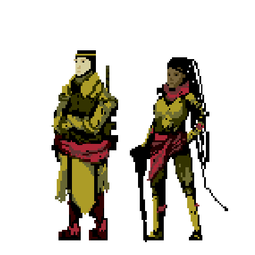
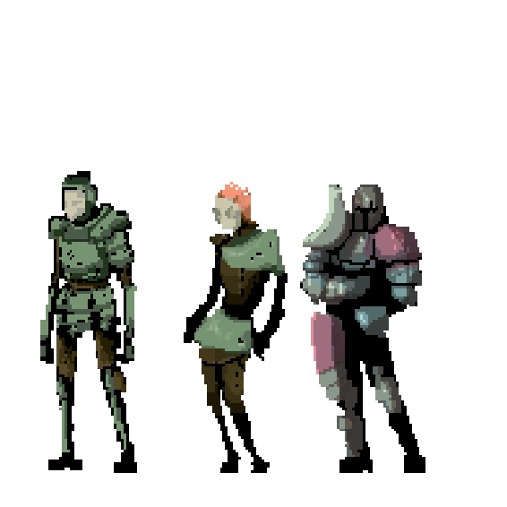
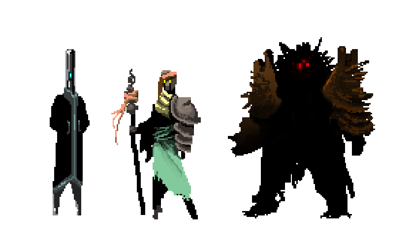

Species Information
Species Information
The world is home to a vast array of intelligent beings, collectively known as species. These individuals enrich the realm with their unique cultures, abilities, and perspectives.
Your choice of species determines not only your character's traits and capabilities but also their place in the world. Species bring their individuality to the forefront, creating an infinite variety of stories and roles.
Roleplaying Freedom
Species offer limitless possibilities for crafting your character’s journey. Your choices define who your character becomes.
Equality and Representation
The term "species" reflects inclusivity and mutual respect, acknowledging the value of all intelligent life.
Species and Identity
Each species' story is shaped by their choices and experiences rather than by inherent traits.
Languages
In Shek, language transcends mere conversation, embedding itself in the fabric of culture, magic, and technology.
Imperial
The common tongue, bridging diverse cultures. Essential for diplomacy and trade.
Orcish/Elvish
Accents and dialects connecting speakers to Orc and Elf heritage.
Naech
Includes predator, prey, and fliers dialects for communicating with animals.
Dealig
A dark, mysterious language of Oreadlis, crucial for dealing with otherworldly entities.
Etheros
The elemental language for summoning and commanding forces like fire and stone.
Night
The language of the undead and nocturnal entities, essential for necromancy.
Clunk
The mechanical tongue, used to interact with constructs and technology.
Yar
Seafarer’s language for navigation and maritime lore.
Drak
The draconic language, granting access to dragon magic and ancient wisdom.
Holy
The celestial language for divine magic and celestial beings.
Jotun
The language of giants, offering insights into their ancient culture.
Species Options
Humans
Humans are a rare but influential creatures, known for their leadership within the empire. Their presence evokes a mix of respect, fear, and awe, making them synonymous with power and governance. Over time, "human" has broadened to include other humanoids, yet "true humans" hold a distinct status, marked by their uncommon appearance and significant roles. Encountering a human in casual settings, away from their typical authoritative contexts, can be surprising and leads to whispered speculations. This duality of reverence and suspicion underscores the complex legacy of humans in Shek, making them a focal point of intrigue and influence in a world rich with diverse beings.
Primarch
Primarchs
Primarchs, often referred to as "True Humans" by some cultures, represent a rare and enigmatic strain of humanity that embodies the full spectrum of human potential and ambition. They are distinguished by their commanding presence and potent influence, often occupying positions of power where their natural authority can sway the will of others.
Feared and revered in equal measure, their very existence shapes the course of history, with their actions often heralding significant change and leaving an enduring legacy in their wake. Despite their rarity, Primarchs reflect the diversity inherent to humanity, encompassing a vast array of cultural, philosophical, and moral leanings.
Average Size
5-6 ft
Lifespan
60-90 years
Language
Imperial
Diet
Omnivore
Rarity
Very Rare
Feature
- Command: As an action, make a contested Influence Check targeting an intelligent creature you can see within short range. On a success, the creature will follow a single-word command until the start of their turn, to the best of its ability, as long as the command doesn't directly result in harm to the creature.
- Sample Words:
- Obey: Move toward you by the shortest route.
- Discard: Drop whatever the target is holding.
- Retreat: Move away from you by the fastest means.
- Submit: Fall prone until the end of the next turn.
Changeling
Changelings
Changelings are rare and mysterious creatures, often misunderstood due to their supernatural origins and extraordinary abilities. They are the result of ancient interference by fey, fiendish, or otherworldly beings, who swapped their progeny with human children. This heritage ties them deeply to chaotic realms, giving them the unique ability to alter their physical appearance.
Changelings have a strange and fascinating presence in the world. Their ability to shift their form allows them to adapt to almost any situation, but it also alienates them from others. This power often leads to them being both feared and sought after, with some becoming spies, diplomats, or performers, while others are wrongly associated with criminal or deceitful activities.
Average Size
5-6 ft
Lifespan
60-90 years
Language
Imperial
Diet
Omnivore
Rarity
Very Rare
Gnomes
Gnomes
Gnomes are an inventive and endlessly curious group of species, known for their boundless imagination and the risks they often take in pursuit of knowledge. Once thriving in the Feywild, Gnomes were celebrated for their ingenuity and eccentricity. However, their curiosity took a dark turn with the rise of the Tinker Gnomes, who, in their pursuit of magical power, began harvesting dryad hearts to create cores for powerful constructs.
When the atrocities came to light, the Feywild itself, under the guidance of Mother Nature, banished all Gnomes, marking them as exiles. Though the actions of the Tinker Gnomes were the cause, the punishment extended to the entire Gnomish people, forcing them to leave their home plane forever. This banishment left a deep mark on Gnomish culture, splitting them into those who seek redemption and balance with nature and those who fully embrace invention and progress, regardless of the cost.
Despite their complicated past, Gnomes are fiercely determined to make their mark on the world. They are often seen as visionaries, tinkering with magical devices, crafting intricate machinery, and pushing the boundaries of what is possible. While many Gnomes resent the mistakes of their ancestors, others see their exile as a challenge to prove that their ingenuity can benefit the world without repeating the sins of the past.
Average Size
3-4 ft
Lifespan
120-200 years
Language
Imperial (Complicated Elvish)
Diet
Omnivore, Vegetarian
Rarity
Somewhat Common
Gnome Options
Tinker
The banishment never disturbed their work. They continue with experiments that have helped and hurt creatures all throughout the world. Their homelands are often sprawling cities of moving parts, practically living traps.
Tinker-ish
You start with an interesting invention that was yours or one of your family’s creations. You keep it with you at all times, and it is very important. Choose from the following list:
- The Impossible Pocket: A pocket 6 inches wide that can fit up to 100 lbs.
- Light Switch: Flick the switch to turn lights on or off.
- The Chemical Transmuter: Pour in one potion and get out another. Make a luck check to determine if it gets better or worse.
- Tikky Tim: A clockwork little guy (PL 1) that can be repaired as an action.
- Temporary Teleport: Click the device to teleport up to medium range for 1 minute. Afterward, you are violently teleported back.
- Tinker Wings: Allow you to fly equal to your movement, but you fall to the ground at the end of your turn.
Gloom
Gloom Gnomes are fun-loving creatures that have tried to find a new home in the Dwelfmire since they left the warm grassy mountains of the Fey. Wherever they go feels like home to them and others around.
Quality Comforts
- When you and your party Press On, give everyone a +1 to anything they recover or repair.
- When you stop somewhere, you can create a comfortable environment, increasing rest healing and safety. It is unlikely that creatures will invade your space, and if they do, they are unlikely to attack.
Vozian
Vozian Gnomes are gnomes that have formed a pact with infernal entities, granting them increased power and abilities. Known for their reddish skin and fiery red eyes, they are often feared and shunned by other gnomes and races for their association with the infernal realm.
Infernal Pact
- Infernal Summoning: As an action, summon a PL 2 demon that must follow your commands, though reluctantly. It remains for 1 minute or until killed.
Nemuri
Nemuri Gnomes have formed a connection with the Dreamsea, granting them increased abilities in magic and Dreamsea manipulation. Known for their ethereal appearance and glowing eyes, they are sought after for their abilities in divination and Nemuri travel.
Nemuri Connection
- Telepathically connect with a creature after 1 hour of linking. Afterward, you can always communicate with this creature regardless of distance or plane. You can only link to one creature at a time.
- Nemuri Manipulation: Gain +2 Spell Points.
Kleinkind
Kleinkind
Small in stature but grand in spirit, the Kleinkind are a species as cozy as a well-worn quilt and as surprising as a jack-in-the-box. Often referred to as "Halflings" by outsiders, these delightful people weave a narrative claiming they were the first intelligent beings to grace the planet. Whether this is true or just a tale spun over a warm mug of cider, the Kleinkind hold their belief with pride (and no small amount of charm).
The Kleinkind's hallmark is their love of community and comfort. Their villages are havens of merriment, where doors are always open, feasts are abundant, and every stranger is a friend waiting to be made. Their lives are painted with warmth and laughter, their hearths glowing as brightly as their spirits. But not all Kleinkind are content to stay within the snug borders of their idyllic enclaves. Some feel the pull of the road, a wanderlust that drives them to become Barnstormers—restless travelers who bring joy, stories, and just a touch of chaos wherever they go.
Physically, Kleinkind are marvels of density. Standing no taller than 2 feet, they are far heavier than their size suggests, with compact musculature that makes them unexpectedly sturdy. A 1-foot Kleinkind can weigh up to 60 pounds, leading to many a startled adventurer who underestimated their strength. Despite their heft, they move with surprising nimbleness, like a stone rolling downhill—steady and unstoppable.
Average Size
1-2 ft
Lifespan
60-90 years
Language
Imperial
Diet
Comfort food
Rarity
Somewhat Common
Features
- Pleasant Aura: Regale a creature with a story for 1 minute. Afterward, you and the creature gain +2 loyalty with one another. Creatures with positive loyalty toward you cannot willingly attack you.
- Warmbones: Your connection to home and hearth exudes an aura of calm, making others feel safe.
- Barnstormer: When traveling for more than 1 week without settling, gain advantage on Luck checks until you remain in one place for 1 week. During this time, you lose the effects of Warmbones.
Orcs
Orcs
The Orcs are a powerful and resilient group of species native to the Orclands, a vast and diverse region that spans thick jungles, arid deserts, and icy mountains. This variety of environments has given rise to distinct cultural and physical adaptations among the Orcs, with each region producing unique traits and skills.
Orcs from the dense jungles are known for their durable skin and natural agility, moving effortlessly through thick vegetation. Desert Orcs, with their dark black skin and lean, athletic builds, have adapted to survive the harsh, sun-scorched sands. Mountain Orcs, large and pale, are built to endure the freezing cold and thin air of the peaks. Despite these regional differences, all Orcs share a defining physical feature: their prominent tusks, which once served practical purposes such as digging for food but now stand as a proud symbol of their strength and heritage.
Beyond their territorial prowess, Orcs are innovators and creators, blending their need for survival and strength with ingenuity. Their culture values exploration and the mastery of their environment, leading to groundbreaking contributions in navigation, agriculture, and written communication.
Average Size
6-8 ft
Lifespan
60-90 years
Language
Imperial (Orkid)
Diet
Omnivore, Vegetarian
Rarity
Common
Core Bound
Core Bound
Known as Core Bound or The Forged, these entities were originally crafted by gnome tinkerers who transferred dryads from their natural habitats into engineered cores. This fusion of natural essence and mechanical engineering gave rise to sentient beings encased in armor, powered by the very core of nature itself. While they were initially used in warfare due to their ability to be reborn in new armors if the core remained intact, modern Core Bound constructs lead full lives, capable of all human-like functions including emotional connections. Efforts continue among scholars to unlock and reclaim memories from the cores that might still linger from previous incarnations.
Average Size
3-9 ft
Lifespan
60 per cycle
Language
Imperial
Diet
Fuel Source
Rarity
Rare
Realmsplit
Realmsplit species are unique beings born of the union between humans and entities from other planes of existence. These extraordinary individuals inherit traits and abilities from both their human heritage and their otherworldly lineage, making them distinct and powerful in their own right. Whether they are descendants of celestial beings or infernal entities, Realmsplit characters possess a fascinating blend of qualities that set them apart from others.
Ensuri
Ensuri
The Ensuri are a mystical and enigmatic species, born from the union of humans and the primordial forces of the elements. Tracing their lineage back to the dawn of existence, the Ensuri embody the fierce power and untamed beauty of the natural world. Some among them hail from ancient families, their bloodlines intertwined with elemental spirits through sacred rites and ancient pacts. Others are the product of transformation, individuals who were altered by profound elemental events, forever changed by their exposure to raw elemental power.
With appearances as diverse as the elements themselves, the Ensuri possess traits reflective of their elemental heritage—skin that shimmers like the surface of a lake under moonlight for those of water lineage, or eyes that flicker with the undying flame of their fire ancestors. They are beings of both creation and destruction, capable of wielding their elemental powers with a natural ease that belies their human origins.
Average Size
5-6 ft
Lifespan
60-90 years
Language
Imperial, Etheros
Diet
Elemental
Rarity
Uncommon
Helborn
Helborn

Born from the merging of demonic energy and mortal essence, Helborn are beings of profound power and mystique. Each Options reflects the distinctive traits of the nine layers of Ordealis, making them as diverse as they are formidable. Their appearance varies from the metallic hues of the Iron Dominion to the eerie glow of the Clockwork Abyss, symbolizing their otherworldly origins. Helborn possess abilities that echo the realms they are connected to, from manipulating memories and time to mastering the elements of ice and sound.
Despite being feared and often shunned by other species for their infernal heritage, many Helborn strive to transcend their ominous nature, proving that they can be as noble or malevolent as their choices dictate. Their society is complex, often shaped by the harsh realities of their birthright, yet enriched by a deep sense of kinship and survival.
Average Size
5-6 ft
Lifespan
60-90 years
Language
Imperial, Dealig
Diet
Carnivore, Living, and Pain
Rarity
Common
Seraphim
Seraphim
In the vast tapestry of existence, few beings hold as revered a position as the Seraphim. These celestial entities stand as shining paragons of devotion, embodying the zenith of spiritual commitment. To become a Seraphim is not merely an elevation in form but a testament to the unyielding faith and dedication one holds to their chosen deity or creed.
Many Seraphim were once mortals, fervent clerics and paladins who, through their unwavering service, found themselves transformed, touched by the divine essence of their deity. These chosen ones shed their mortal coil, ascending to a state of celestial grace, their very being infused with holy energy. Their previous lives as guardians of faith on the material plane set the foundation for their new existence as divine emissaries, bridging the gap between the heavens and the earthly realms.
Yet, not all Seraphim are born from acts of devout mortals. Ancient lineages of these celestial beings have existed since the dawn of time, chronicled in age-old scriptures and cosmic legends. These primordial Seraphim are believed to be the first of their kind, created by the gods themselves to serve as their most trusted advisors and guardians.
Average Size
5-6 ft
Lifespan
Long Lived 100-200 years
Language
Imperial, Holy
Diet
Elemental
Rarity
Rare
Etherians
Etherians
Birthed from the infinite expanse of the Dreamsea, Etherians stand as curious amalgamations of the tangible and the intangible. These beings, molded from the vivid dreams and profound fears of countless dreaming souls, encapsulate the raw emotions that gave rise to them. Possessing a form as malleable as a fleeting thought yet as permanent as the deepest desires, Etherians can transition seamlessly between their ethereal origins and the physical realm.
Their unique existence grants them unparalleled prowess in navigating dreams. Many, drawn by intrigue or purpose, have ventured into the waking world. Here, they find themselves endowed with the remarkable ability to delve into and influence the dreams of mortals, ranging from the most tranquil visions to the darkest of nightmares. This talent has made them both a beacon of fascination and a source of trepidation. While some seek them out for guidance through their own subconscious labyrinths, others view them with suspicion, wary of their potential to invoke tormenting nightmares.
Despite their playful and often mischievous demeanor, these Etherians can exhibit unpredictable temperaments, especially if provoked. Their fluid nature makes them adept at blending into the world's myriad landscapes, yet a profound disconnect remains. Deep down, they grapple with understanding the unwavering certainties of the waking world, a stark contrast to the ever-shifting sands of the Dreamsea from which they emerged.
Average Size
5-6 ft
Lifespan
Long Lived 100-200 years
Language
Imperial, Yar
Diet
Sleep & Dreams
Rarity
Rare
Goblijjins
Goblijjins
Deep within the annals of history, the Goblijjins emerged from the very essence of VoZo, the Primordial Evil that once threatened to consume Shek. Born of chaos and malevolence, their early ancestors were feared, loathed, and branded as the living symbols of evil's persistence in the world. Yet, time has a way of reshaping destinies, and the Goblijjins of today are a testament to that.
From the sprawling grasslands to the hidden alleyways of cities, Goblijjins have found their place. While the shadow of their sinister lineage does loom over them, the Goblijjins have strived hard to redefine themselves. But society, often harsh and unforgiving, has rarely been welcoming. To most, Goblijjins are still the remnants of an era best forgotten, and they face the brunt of that prejudice. With the deck stacked against them, many Goblijjins embrace roles that benefit the greater good, hoping to find a measure of acceptance. Yet, the world remains wary, keeping them at arm's length.
In their heart of hearts, every Goblijjin struggles with their innate mischievous nature. Whether it's a sly prank, a cheeky comment, or simply being a "little stinker," it's hardwired into their very being. It's not just a choice; it's a part of who they are, a reminder of their tumultuous origin. This playful, sometimes disruptive, behavior often gets them into trouble, further alienating them from other species. Their names, often odd and humorous like "Snotbubble" or "Wiggletoe," are a reflection of their unique culture and perspective on life. For a species with such a fleeting lifespan, every moment is a celebration, every day a dance. There's a saying among Goblijjins: "Live for the giggle, for tomorrow we might not be here to hear it." And live they do, with a fervor and zest that few can match.
One of the most distinct characteristics of the Goblijjins is their black, flaky blood. When exposed to the air, it crystallizes and turns to ash, drifting away with the wind. A poignant metaphor for their transient lives, perhaps. Despite the challenges they face, the Goblijjins are a testament to resilience, adaptability, and the indomitable spirit to rise above one's origins. While the world may not always be kind to them, the Goblijjins of Shek continue to carve out their place, one mischievous giggle at a time.
Goblin
Goblin
The Goblins are the most prolific of the Goblijjin. Their rapid proliferation throughout the world is a testament to their adaptability and resilience. From the sprawling grasslands to the deepest, forgotten dungeons, one can find traces of these tenacious beings. Their language, a unique dialect known as "Gutter Common," stands as a symbol of their distinct identity, even if it's often misunderstood by others.
Average Size
2-4 ft
Lifespan
15-20 years
Language
Imperial (Gutter)
Diet
Everything
Rarity
Too Common
Hojjoblin
Hojjoblin
Hojgoblins, often considered the matured cousins of goblins, are a testament to evolution or perhaps a stroke of magical chance. Some say they were born of goblins who consumed enchanted fruits, while others argue they were deliberately shaped by arcane forces. Whatever the case, Hojgoblins have carved a niche for themselves as strategic masterminds and refined engineers. Their reputation precedes them; many war generals eagerly seek their counsel in battles, while cities benefit from their architectural prowess. Yet, with heightened intelligence comes a darker side. Some Hojgoblins find themselves on a perilous edge, where overthinking can spiral into madness. This duality of genius and potential instability makes them a complex and fascinating race in the world of Shek.
Average Size
5-6 ft
Lifespan
Short Lived 30-45 years
Language
Imperial (Gutter)
Diet
Everything
Rarity
Common
Giants
Giants
Giants, once formidable beings of incomprehensible might and stature, have become entities shrouded in enigma and dark tales. Thousands of years prior, their kind, the True Giants, were expelled or driven from the prime material plane through a tumult of cosmic-scale events and ethereal politics that were far beyond their control or comprehension. Yet, the ripple of their ancient presence still lingers hauntingly across the lands, and their descendants, although diminished, tread cautiously in a world that has grown wary of their lineage.
The True Giants, beings of incredible power and stature, were banished to the distant realms by the celestial powers, forever locked away from the prime material plane due to a cascade of cataclysmic occurrences and divine interventions. Their banishment, wrought with sorrow and wrath, echoed through the cosmos, leaving a scar in the collective memory of all beings in Shek. Even now, these giants, known as the "Banished", linger in their distant, secluded realms, their hearts heavy with the burden of lost epochs and a deep yearning for the world they were torn away from.
In the contemporary epoch of Shek, those of giant lineage walk a precarious path, ever-shadowed by the colossal specters of their ancestors. Three distinct species of half-giants, each bearing the diluted yet still formidable blood of their forebears, inhabit the world, each uniquely adapted to their struggle for acceptance and survival amidst a populace that regards them with a mixture of awe and trepidation.
Average Size
9-13 ft
Lifespan
Extended 300-500 years
Language
Imperial, Jotun
Diet
Omnivore
Rarity
Uncommon
Dragons
Dragons
In the epoch before recorded time, Shek was a tempestuous realm, constantly wracked by the chaotic fury of the elements. This world, brimming with raw elemental potential, was a cacophony of roaring thunder, raging infernos, surging tides, and howling gales. It was during this tumultuous age that the God Dragon Khalas descended upon Shek, drawn by the planet's untamed energy.
Khalas, a colossal being of indescribable magnificence, bore scales that shimmered with the luminescence of a thousand stars. With wings vast enough to blanket entire cities and eyes that held the wisdom of the cosmos, Khalas was a deity of unparalleled power. As the mighty dragon landed, the storms themselves seemed to bow before this majestic entity, waiting in bated anticipation. Drawing upon an ancient and arcane rite, Khalas inhaled deeply, absorbing the wild elemental tempests that raged across Shek. Every bolt of lightning, every lick of flame, every gust of wind, and every crashing wave was drawn into the God Dragon's maw. The very fabric of the world held its breath, and for a brief moment, an eerie calm descended upon Shek.
And then, with an exhalation that resonated with the force of creation itself, Khalas birthed the Crumbling Void. This vast expanse, a space where the elements met and melded, became a canvas upon which new life would be painted. With each subsequent breath, Khalas infused the void with fragments of the elements, giving birth to the myriad species of dragons that would come to populate Shek.
From the fiery breath of Khalas came the Crimson Pyre Dragons, embodiments of flame and fury. The cool exhalations birthed the Glacial Shard Dragons, masters of frost and ice. The gentle sighs brought forth the Cloudburst Dragons, rulers of the skies and storms. And so, with each breath, a new lineage of dragons was formed, each inheriting a fragment of Khalas's elemental might.
In the ages that followed, these dragons would go on to shape the history and destiny of Shek. They carved out territories, established dynasties, and played pivotal roles in the world's evolving narrative. Yet, they never forgot their divine origins, always paying homage to Khalas, the God Dragon who breathed life into their kind.
Though Khalas's physical presence has long since faded from Shek, the legacy of that fateful day remains. The dragons, in all their elemental splendor, are a testament to the God Dragon's creative force. They are not just creatures of myth and legend, but living embodiments of Shek's primal history, forever soaring through its skies, guarding its secrets, and shaping its future.
How to Create a Dragon
To create your dragon, follow these simple steps:
- Pick a Dragon Type: Choose the type of dragon, such as an Elemental, Planar, or Neutral Dragon.
- Pick a Dragon Option: Select the stage of your dragon: Whelpling, Adult, or Ancient.
- Combine Features: Merge your chosen type and option to define your dragon's abilities and traits.
Work with your narrator to customize your dragon's appearance, personality, and unique details. Once ready, let your dragon take flight!

Dragon Types
Elemental Dragons
Viridian Bile (Acid)
Bile Dragons are the smallest among the elemental dragons, they have streamlined bodies built for slinking through narrow spaces and are often found in caves or marshes. Their scales are smooth, olive-green, transitioning to yellow on their underbelly, and they have forward-curving horns like a ram. Bile Dragons are cunning, territorial, and can be fiercely protective of their habitats.
Features:
- Acidic Aura: Your presence corrodes the environment around you. As an action, until the end of your next turn, each creature starting its turn within reach range takes 3 acid damage.
Crimson Pyre (Fire)
Pyre Dragons are of average size and have muscular bodies. Those with wings have broad wings to help lift their heavy frames. They are covered in red scales that resemble smoldering coals. Their large, curved horns and spines running along their backs give them an intimidating appearance. They are boisterous, proud, and are quick to challenge intruders, which reflects their fiery temperament.
Features:
- Fiery Presence: Your mere presence causes the air around you to superheat. As an action, until the end of your next turn, each creature starting its turn within reach range takes 3 heat damage.
Glacial Shard (Ice)
Shard Dragons are slightly larger than Pyre Dragons and have more elongated bodies built for speed. They have crystalline, white scales that shimmer like ice in the sun, and their long, spiraled horns are reminiscent of icicles. These dragons are cool-tempered, elusive, and prefer to avoid unnecessary fights, but their piercing ice breath makes them formidable when cornered.
Features:
- Winter’s Freeze: As an action, target a large or smaller creature. Using your icy breath, they take the pinned condition until the end of their next turn unless they use a half-action Strength check to remove the frost.
Cloudburst (Thunder)
Cloudburst Dragons are among the largest of the elemental dragons. They have strong, lean bodies built for enduring long flights, and those that have wings possess sturdy wings to brave the strongest storms. Their black scales are almost metallic, gleaming with an ethereal white along their underbelly. They have a love for music and are known to join in the chorus of a thunderstorm with their deep, resonant roars.
Features:
- Sonic Roar: As an action, unleash a devastating roar. Each creature within reach range must succeed a Survival check or take the deaf condition until the end of their next turn.
Aquarion (Water)
Tsunami Dragons are of average size with sleek bodies and fins replacing the usual horns, allowing them to maneuver swiftly in water. Their light blue scales are reminiscent of the ocean, and their pearl bellies shimmer like calm waters. Generally peaceful, they often help sailors navigate, but they can unleash a fearsome torrent of water when provoked.
Features:
- Tidal Breath: As an action, belch a wave of water at a target within reach range. The target must succeed a Strength check or be pushed 10ft or -5ft per success.
Venom Cloud (Toxic)
Venom Dragons are larger than most, their bodies built for strength and resilience. Their scales are black, transitioning into a sickly lime-yellow along their underbelly. With sharp horns and spines dripping with venom, these dragons often position themselves in power, using their toxic breath to maintain control.
Features:
- Toxic Cloud: As an action, exhale a toxic cloud that spreads around corners. Each creature within a short-range cone must make a Survival check or take 1 toxic damage.
Zephyr Voltstryke (Lightning)
Bolt Dragons are the leanest among their kind, built for speed and agility. Their scales are dark blue or black, with a contrasting light blue underbelly. Their horns arc backward like lightning bolts. Quick to react and quicker to anger, they are known for their unpredictable and explosive tempers.
Features:
- Lightning Reflexes: If you have disadvantage on Agility, you gain +3 to Agility checks.
Solarflare (Solar)
The Solarflare Dragons, often revered as the luminous gold dragons, are a rare and splendid sight in the prime material realm. Whispers say they are relentlessly pursued by the empire, their lustrous golden scales coveted for their unmatched purity. These dragons display a magnificent contrast between their gleaming gold scales and the vibrant hues of their underbellies, ranging from the deepest twilight to the brightest dawn. Their breath weapon is a devastating beam of concentrated solar energy, embodying the sun's fury and scorching all in its path.
Features:
- Solar Powered: As an action, gain +3 spell points until the end of your next turn.
Ashen Wisp (Eclipse)
Wisp Dragons are slightly larger than Bile Dragons, with bodies built for stealth. Their nearly translucent black scales and dark grey belly scales allow them to blend into the shadows. Despite their solitary nature, they're known to assist travelers in need, guiding them safely away from wildfires with their smoke breath.
Features:
- Smoke Cloak: You can use a half-action to envelop yourself in a shroud of smoke, granting you advantage on Stealth checks.
Planar Dragons
Verdant Whisper (Nature)
Whisper Dragons are of average size. Their scales are rough and resemble bark, and they bear numerous branches and foliage that grow from their bodies, serving as additional protection. They are quiet, thoughtful creatures that enjoy the company of flora and fauna and often play the role of protectors of the forest.
Features:
- Nature Bound: You can speak with plants and animals, they always speak in riddles.
- Barkskin: Gain +5 armor, can be healed or repaired.
Shadowraith (Eclipse)
Wraith Dragons are among the largest of the planar dragons, their bodies built for strength and durability. Their scales are as black as the void, absorbing light rather than reflecting it. They have an uncanny knack for making friends, often attracting a retinue of ghosts and spirits. Despite their intimidating appearance, they're gentle giants who prefer companionship over conflict.
Features:
- Shadow Cloak: The dragon can use an off-action to melt into shadows, becoming invisible until it attacks or casts a spell.
- Spectral Vision: You have advantage on Observation checks for creatures of the Umbral Eclipse (ghosts, specters, invisible slugs, and so on).
Radiance (Solar)
Radiance Dragons are the smallest among the planar dragons. Their scales shimmer with a pearlescent sheen, radiating a soft glow that's comforting to behold. They bear an aloof attitude and often exhibit a sense of superiority over others. Despite their arrogance, their divine heritage cannot be denied, and they often intervene to maintain balance and peace.
Features:
- Divine Shield: As an action, give a creature a radiant shield that protects them from the next instance of damage. It lasts for 1 minute and glows in the dark.
Astraleon (Psychic)
Flux Dragons are larger than most dragons. Their scales shift in color, reflecting their mood and the energy around them. They are free-spirited and inquisitive, often encroaching on personal boundaries. However, their charismatic demeanor often results in them being forgiven for their lack of tact.
Features:
- Nemuri Shift: As an action, become semi-ethereal, taking half damage and causing attacks against you to have disadvantage until the end of your next turn.
Vozurion (Vozian)
Vozian Dragons are the most robust among the planar dragons. They are adorned with numerous large horns, their scales a kaleidoscope of red, purple, and orange hues. Fiercely loyal to those of Vozian heritage, their fiery wrath is a thing to be feared by those who cross them.
Features:
- Nightmare Scream: As an action, howl at a target. They must make a Spirit check or take the fear condition. On a success, they are immune to this effect.
Neutral Dragons
Thornspike (Piercing)
Barb Dragons are bigger than average dragons and have bulkier bodies. They are covered in muted-hued, thorny scales that not only serve as armor but also as a weapon. These dragons have limited intellect and are driven primarily by instinct and hunger. They are territorial and aggressive towards intruders, who often find themselves faced with a cloud of sharp spikes when encroaching on a Barb Dragon's domain.
Features:
- Spiked Hide: When a creature hits you with a melee attack, they take 1 piercing damage.
Auric Reaver (Slashing)
Reaver Dragons are the largest of all these dragon types, their massive bodies covered in metallic scales that gleam in the sunlight. They have large, curved horns and a thick, bladed tail that's as deadly as any weapon. Despite their imposing size and strength, they possess a noble spirit and often intervene to maintain harmony in their territory.
Features:
- Reaper’s Tail: You can use your tail as a [[1d6]] slashing damage, light weapon.
Crystal Wyrms (Impact)
The largest of all dragons, the Crystal Wyrms are magnificent creatures with scales that resemble an array of gemstones, not limited to emeralds but including sapphires, rubies, and diamonds. These scales glint and shimmer with an ethereal light, casting colorful reflections. Their horns are like crystallized sculptures, and their tails are thick and blunted, used as a powerful weapon. Crystal formations adorn their bodies, adding to their mystical appearance. Known for their wisdom and patience, these creatures often align themselves with the forces of balance and nature.
Features:
- Boulder Bash: When you deal Impact damage, deal an additional +3 damage.
Greenborn
The Greenborn are a diverse collective of plant and fungal species, embodying the vibrant, untamed spirit of nature itself. Rooted in the ancient magic of the natural world, they serve as protectors, nurturers, and guardians of the verdant realms. Whether thriving in shadowy forests, sunlit groves, or misty marshlands, the Greenborn are intrinsically tied to the life force of the land they inhabit.
Each Greenborn carries a fragment of the world’s primal vitality, their existence a living testament to the endless cycles of growth, decay, and renewal. From the towering, immovable Husk Otaota to the enigmatic, spore-filled Ciuperca, they are as varied as the ecosystems they call home. These beings are not merely part of nature—they are nature, walking and breathing embodiments of the earth’s will.
While the Greenborn are often misunderstood or feared by other species, their wisdom and connection to the land make them vital to maintaining the delicate balance of Shek’s ecosystems. Through songs whispered on the wind, spores drifting through the air, or the silent communion of roots beneath the soil, the Greenborn share a collective consciousness that transcends words. They revere the ancient spirits of nature, honoring their duty to protect the sacred groves, ancient forests, and untamed wilds that give them life.
Otaota
Otaota
The Otaota are a mystical and deeply spiritual creatures, rooted in the rich cycles of nature. They are the living embodiment of the forests and jungles they inhabit, protectors of ancient groves and sacred lands. Resembling a cross between human and tree, the Otaota’s bodies are adorned with leaves, glowing flowers, and sturdy wooden features that reflect their connection to the earth. Their glowing flowers are said to bloom or wither based on their health and emotional state, making them an expressive and visually captivating species.
They believe every tree, river, and mountain holds a spirit, and their lives are dedicated to nurturing and protecting these natural spirits. Their songs, dances, and carvings are sacred acts, used to honor their ancestors, tell the stories of their people, and commune with the natural world.
Otaota villages are often hidden within vast, ancient forests or atop lush volcanic islands. These settlements are built in harmony with the environment, featuring homes carved into living trees, gardens tended by their plant allies, and totems adorned with intricate leaf patterns and glowing sap. Otaota celebrations are vibrant and full of life, with festivals honoring the bloom cycles, harvests, and celestial events that guide their lives.
Average Size
4-6 ft
Lifespan
60-90 years
Language
Imperial, Naech (Leaf)
Diet
Photosynthesis or Carnivorous
Rarity
Very Rare
Venin Otaota
The Venin Otaota are enigmatic and feared, their very essence infused with toxic sap that flows like venom through their veins. Venin are the unseen protectors of the Otaota, often acting from the shadows to safeguard their people. Their sap, while deadly to foes, is sacred to their kind, symbolizing both the power of life and the inevitability of decay.
Venin Otaota are typically found in the darker, wetter corners of their lands, such as marshes, dense jungles, or shadowed groves. They act as guardians of these sacred spaces, where their poisonous nature is most effective. Their ability to commune with and command other plant life is revered within Otaota culture, as they can summon dense thickets or poisonous vines to entrap enemies or bolster defenses.
Features:
- Nature's Allies: Otaota can communicate with and control other plant life within a 30 ft radius, using them for defense or aid in battle with an Influence check.
- Poison Sap: As a Half-Action (Enhance), apply your poisonous sap to a weapon. It deals an additional [[1d4]] acid or toxic damage until the end of your next turn.
Husk Otaota
Husk Otaota are towering, immovable sentinels that embody the enduring strength of ancient trees. With bark-like skin as thick as armor and roots that metaphorically run deep into the earth, they are the embodiment of stability and protection. Husk Otaota are often the first to stand against overwhelming forces, their sheer presence a deterrent to any who would harm their lands or people.
Regarded as living totems by their kin, Husk Otaota serve as both spiritual guides and physical protectors. They have a deep connection to the earth and are believed to channel the wisdom of the ancient forests. It is not uncommon for Husk Otaota to stand still for hours, meditating and attuning themselves to the natural world. When they move, it is with purpose and deliberate force, their every step a statement of power.
Features:
- Photosynthesis: Otaota can convert sunlight into energy, allowing you to survive without food or water for extended periods of time.
- Barkskin: Gain +5 armor, which can be healed or repaired.
Ciuperca
Ciuperca
In the deep, dark forests of the realm, a strange and ancient species of mushroom has come to prominence. These sentient beings, known as the Fungi, have evolved over millennia to possess intelligence and will of their own. They are capable of communicating with one another through a complex system of spores and chemicals, and possess a deep understanding of the natural world around them. Some Fungi have even learned to harness the power of magic, using their unique physiology to cast powerful spells and curses. Though they are often feared and misunderstood by the other races of the realm, the Fungi are a vital part of the ecosystem, and play a crucial role in maintaining the balance of nature.
Fungi come in many variations, from the small, psychedelic mushrooms that are used by the local tribes for religious rituals, to the deadly poison mushrooms that lurk in the shadows, waiting for unsuspecting prey to wander too close. Each species of Fungi has its own unique abilities and characteristics, making them a fascinating and diverse group of creatures to encounter in the wild.
Average Size
5-6 ft
Lifespan
60-90 years
Language
Imperial, Naech (Funjjis)
Diet
Decomposing Life
Rarity
Very Rare
Deadly Poison Mushroom
This species of mushroom is highly toxic and can cause severe illness or death if consumed. They typically have a dark cap, often with a glossy or slimy texture. They are often found in wooded areas and can be mistaken for edible mushrooms by foragers.
Features:
- Toxic Spore Trap: Can release a burst of poisonous spores when threatened, creating a hazardous area that can weaken or incapacitate foes.
- Decomposer's Touch: By touching organic material, they can accelerate decomposition, breaking down dead matter to nourish themselves and potentially harm living enemies by weakening structures or equipment.
Ghost Mushroom
This species of mushroom is known for its ghostly appearance. They are typically white in color and emit a faint glow in the dark. They are often found in graveyards or other spooky areas and are often associated with death and the afterlife. They are not known to be edible.
Features:
- Phantasmal Illumination: Their glow can be manipulated to create illusory shapes and messages, or even to obscure visibility, acting as a natural form of camouflage or misdirection.
- Soul Spore: They have the ability to capture echoes of the souls that have passed near them, storing memories or emotions that can be accessed by those who know how to communicate with them.
- Ectoplasmic Growth: They can grow over and consume ectoplasmic residues, cleansing areas of malevolent spirits or residual hauntings, making them valuable in spirit-ridden locales.
Symbiotes
Symbiotes
Symbiotes are an enigmatic and ancient species known for their unique ability to form powerful bonds with various hosts. They can be found in the darkest corners and most sacred spaces of the world, attracted to beings with strong capabilities and unique traits. They enhance their host's abilities while deriving sustenance and other benefits from the bond. These extraordinary creatures exist in various forms, such as the aggressive Parasitic Symbiotes and the wise Eternal Worms. Each symbiote offers a distinct set of skills and enhancements, making them highly sought-after companions for those who can handle the challenges and responsibilities of hosting such powerful beings. Their bonds with their hosts create a profound and life-changing connection, forever altering the destinies of both parties involved.
Symbiote Removal
Removing a symbiote is a dangerous and delicate process. A successful Medicine check is required to safely remove the symbiote without causing harm to the host or the symbiote. If the check fails, the host and symbiote each take damage and may suffer from various conditions or penalties.
Being Without a Host
Symbiotes can survive outside of a host for a number of hours equal to their Survival check. If they do not find a willing or otherwise suitable host within that time, they immediately take the Death condition.
Average Size
Host height or less
Lifespan
60-90 years
Language
Imperial
Diet
Host Life Essence
Rarity
Legendary